Contents
- Class Definition
- Properties
- Methods
- Continuous dynamics
- Discrete dynamics
- Matrix A: State Jacobian in Discrete dynamics
- Matrix A: State Jacobian in Continuous dynamics
- Matrix B: State to Control Jacobian in Discrete dynamics
- Matrix G: State to noise Jacobian in Discrete dynamics
- Generating process noise
- Computing process noise covarinace
- Computing planned open-loop deterministic controls (or nominal controls) for unicycle model.
- Computing planned open-loop deterministic controls (or nominal controls) for unicycle model.
- Computing planned open-loop deterministic state trajectory (or nominal trajectory) for unicycle model.
- Sample a valid orbit (periodic trajectory)
- Construct an orbit
- Draw an orbit
- Generate open-loop Orbit-to-Orbit trajectory
- check if the trajectory is collision-free or not
- Draw nominal trajectories
- Draw orbit neighborhood
- Generating Control-dependent and independent noises
- Generating Control-dependent Noise Covariance
- Generating deterministic open loop controls (nominal controls)
- Generating deterministic open loop controls with bounded curvature (nominal controls)
Class Definition
classdef Unicycle_robot < handle
%============================== UNICYCLE MOTION MODEL ========================================= % Note that because the class is defined as a handle class, the % properties must be defined such that they are do not change from an % object to another one.
Properties
properties (Constant = true)
stDim = state.dim; % state dimension
ctDim = 2; % control vector dimension
wDim = 5; % Process noise (W) dimension % For the generality we also consider the additive noise on kinematics equation (3 dimension), but it most probably will set to zero. The main noise is a 2 dimensional noise which is added to the controls.
dt = user_data_class.par.motion_model_parameters.dt;
base_length = user_data_class.par.motion_model_parameters.base_length; % distance between robot's rear wheels.
sigma_b_u = user_data_class.par.motion_model_parameters.sigma_b_u_unicycle;
eta_u = user_data_class.par.motion_model_parameters.eta_u_unicycle;
P_Wg = user_data_class.par.motion_model_parameters.P_Wg;
end
properties (Constant = true) % orbit-related properties
turn_radius_min = 1.5; % indeed we need to define the minimum linear velocity in turnings (on orbits) and then find the minimum radius accordingly. But, we picked the more intuitive way.
angular_velocity_max = 140*pi/180; % degree per second (converted to radian per second)
linear_velocity_min_on_orbit = Unicycle_robot.turn_radius_min*Unicycle_robot.angular_velocity_max; % note that on the straight line the minimum velocity can go to zero. But, in turnings (on orbit) the linear velocity cannot fall below this value.
linear_velocity_max = 15;
end
Methods
methods (Static = true)
Continuous dynamics
function x_dot = f_contin(x,u,w) %#ok<STOUT,INUSD> % This is not needed yet in unicycle model. end
Discrete dynamics
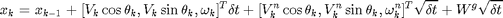
function x_next = f_discrete(x,u,w) if length(u) ~= 2, error('SFMP: In this unicycle model, the dimension of control has to be 2'), end Un = w(1:Unicycle_robot.ctDim); % The size of Un may be different from ctDim in some other model. Wg = w(Unicycle_robot.ctDim+1 : Unicycle_robot.wDim); % The size of Wg may be different from stDim in some other model. c = cos(x(3)); s = sin(x(3)); d_t = Unicycle_robot.dt; x_next = x + [u(1)*c ; u(1)*s ; u(2)]*d_t + [Un(1)*c ; Un(1)*s ; Un(2)]*sqrt(d_t) + Wg*sqrt(d_t); end
Matrix A: State Jacobian in Discrete dynamics
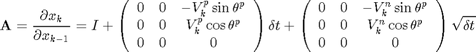
Note that in most cases, we assume that we do not have access to the exact value of noises. Thus, we input 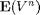, which is zero to compute the linearization matrices.
function A = df_dx_func(x,u,w) if (length(u) ~= 2 || length(w) ~= 5), error('SFMP: In this unicycle model, the dimension of control has to be 2 and noise has to be 5'), end Un = w(1:Unicycle_robot.ctDim); % The size of Un may be different from ctDim in some other model. % Wg = w(Unicycle_robot.ctDim+1 : Unicycle_robot.wDim); % % The size of Wg may be different from stDim in some other % model. In this Jacobian "Wg" does not appear. c = cos(x(3)); s = sin(x(3)); d_t = Unicycle_robot.dt; A = eye(Unicycle_robot.stDim) + [0 0 -u(1)*s; 0 0 u(1)*c; 0 0 0] * d_t + [0 0 -Un(1)*s; 0 0 Un(1)*c; 0 0 0] * sqrt(d_t); end
Matrix A: State Jacobian in Continuous dynamics
function Acontin = df_contin_dx(x,u,w) %#ok<STOUT,INUSD> % Not yet implemented. end
Matrix B: State to Control Jacobian in Discrete dynamics
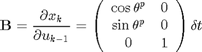
function B = df_du_func(x,u,w) %#ok<INUSD> th = x(3); B = [cos(th) , 0 ; sin(th) , 0 ; 0 , 1] * Unicycle_robot.dt; end
Matrix G: State to noise Jacobian in Discrete dynamics
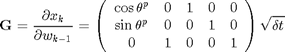
function G = df_dw_func(x,u,w) %#ok<INUSD> th=x(3); G = [cos(th) , 0 , 1 , 0 , 0 ; sin(th) , 0 , 0 ,1,0 ; 0 , 1 , 0 ,0,1] * sqrt(Unicycle_robot.dt); end
Generating process noise
The whole process noise 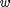 consists of control-dependent noise 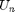 and control-independent noise 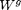.
function w = generate_process_noise(x,u) %#ok<INUSD> [Un,Wg] = generate_control_and_indep_process_noise(u); w = [Un;Wg]; end
Computing process noise covarinace
function Q_process_noise = process_noise_cov(x,u) %#ok<INUSD> P_Un = control_noise_covariance(u); Q_process_noise = blkdiag(P_Un,Unicycle_robot.P_Wg); end
Computing planned open-loop deterministic controls (or nominal controls) for unicycle model.
function nominal_traj = generate_open_loop_point2point_traj(x_initial,x_final) % "x_initial" and "x_final" are vectors that indicate the start % and final position of the state trajectory, we are planning % the control "up" for. if isa(x_initial , 'state'), x_initial = x_initial.val; end if isa(x_final , 'state'), x_final = x_final.val; end % minimum turn radius resutls from dividing the minimum linear % velocity to maximum angular velocity. However, here we assume % that the linear velocity is constant. radius = Unicycle_robot.turn_radius_min; initial_circle_center = [radius*cos(x_initial(3)-pi/2) ; radius*sin(x_initial(3)-pi/2)] + x_initial(1:2); final_circle_center = [radius*cos(x_final(3)-pi/2) ; radius*sin(x_final(3)-pi/2)] + x_final(1:2); % tth = 0:0.1:2*pi+.1;plot(initial_circle_center(1)+radius*cos(tth), initial_circle_center(2)+radius*sin(tth)); %TO DEBUG - DONT DELETE % tth = 0:0.1:2*pi+.1;plot(final_circle_center(1)+radius*cos(tth), final_circle_center(2)+radius*sin(tth)); %TO DEBUG - DONT DELETE gamma_tangent = atan2( final_circle_center(2) - initial_circle_center(2) , final_circle_center(1) - initial_circle_center(1) ); % The angle of the tangent line gamma_start_of_tangent_line = gamma_tangent + pi/2; % the angle on which the starting point of the tangent line lies on orbit i. gamma_end_of_tangent_line = gamma_tangent + pi/2; % the angle on which the ending point of the tangent line lies on orbit i. initial_robot_gamma = x_initial(3) + pi/2; % Note that this is not robot's heading angle. This says that at which angle robot lies on the circle. final_robot_gamma = x_final(3) + pi/2; % Note that this is not robot's heading angle. This says that at which angle robot lies on the circle. % Turn part on the first circle entire_th_on_initial_circle = delta_theta_turn(initial_robot_gamma, gamma_start_of_tangent_line, 'cw'); % NOTE: this must be a negative number as we turn CLOCKWISE. delta_theta_on_turns = - Unicycle_robot.angular_velocity_max * Unicycle_robot.dt ; %VERY IMPORTANT: since we want to traverse the circles clockwise, the angular velocity has to be NEGATIVE. kf_pre_rational = entire_th_on_initial_circle/delta_theta_on_turns; kf_pre = ceil(kf_pre_rational); V_pre = Unicycle_robot.linear_velocity_min_on_orbit * [ones(1,kf_pre-1) , kf_pre_rational-floor(kf_pre_rational)]; omega_pre = -Unicycle_robot.angular_velocity_max * [ones(1,kf_pre-1) , kf_pre_rational-floor(kf_pre_rational)]; %VERY IMPORTANT: since we want to traverse the circles clockwise, the angular velocity has to be NEGATIVE. u_pre = [V_pre ; omega_pre]; w_zero = zeros(Unicycle_robot.wDim,1); % no noise x_pre(:,1) = x_initial; for k=1:kf_pre x_pre(:,k+1) = MotionModel_class.f_discrete(x_pre(:,k),u_pre(:,k),w_zero); % tmp = state(x_pre(:,k+1));tmp.draw(); % FOR DEBUGGING end % Line part tanget_line_length = norm ( final_circle_center - initial_circle_center ) ; step_length = Unicycle_robot.linear_velocity_max * Unicycle_robot.dt; kf_line_rational = tanget_line_length/step_length; kf_line = ceil(kf_line_rational); V_line = Unicycle_robot.linear_velocity_max * [ones(1,kf_line-1) , kf_line_rational-floor(kf_line_rational)]; omega_line = zeros(1,kf_line); u_line = [V_line;omega_line]; x_line(:,1) = x_pre(:,kf_pre+1); for k=1:kf_line x_line(:,k+1) = MotionModel_class.f_discrete(x_line(:,k),u_line(:,k),w_zero); % tmp = state(x_line(:,k+1));tmp.draw(); % FOR DEBUGGING end % Turn part on the final circle th_on_final_circle = delta_theta_turn(gamma_end_of_tangent_line, final_robot_gamma, 'cw'); % NOTE: this must be a negative number as we turn CLOCKWISE. kf_post_rational = th_on_final_circle/delta_theta_on_turns; kf_post = ceil(kf_post_rational); V_post = Unicycle_robot.linear_velocity_min_on_orbit * [ones(1,kf_post-1) , kf_post_rational-floor(kf_post_rational)]; omega_post = -Unicycle_robot.angular_velocity_max * [ones(1,kf_post-1) , kf_post_rational-floor(kf_post_rational)]; %VERY IMPORTANT: since we want to traverse the circles clockwise, the angular velocity has to be NEGATIVE. u_post = [V_post ; omega_post]; x_post(:,1) = x_line(:,kf_line+1); for k=1:kf_post x_post(:,k+1) = MotionModel_class.f_discrete(x_post(:,k),u_post(:,k),w_zero); % tmp = state(x_post(:,k+1));tmp.draw(); % FOR DEBUGGING end nominal_traj.x = [x_pre(:,1:kf_pre) , x_line(:,1:kf_line) , x_post(:,1:kf_post+1)]; % This line is written very carefully. So, dont worry about its correctness! nominal_traj.u = [u_pre(:,1:kf_pre) , u_line(:,1:kf_line) , u_post(:,1:kf_post)]; % This line is written very carefully. So, dont worry about its correctness! end
Computing planned open-loop deterministic controls (or nominal controls) for unicycle model.
function nominal_traj = generate_VALID_open_loop_point2point_traj(x_initial,x_final) % "x_initial" and "x_final" are vectors that indicate the start % and final position of the state trajectory, we are planning % the control "up" for. if isa(x_initial , 'state'), x_initial = x_initial.val; end if isa(x_final , 'state'), x_final = x_final.val; end % minimum turn radius resutls from dividing the minimum linear % velocity to maximum angular velocity. However, here we assume % that the linear velocity is constant. radius = Unicycle_robot.turn_radius_min; initial_circle_center = [radius*cos(x_initial(3)-pi/2) ; radius*sin(x_initial(3)-pi/2)] + x_initial(1:2); final_circle_center = [radius*cos(x_final(3)-pi/2) ; radius*sin(x_final(3)-pi/2)] + x_final(1:2); % tth = 0:0.1:2*pi+.1;plot(initial_circle_center(1)+radius*cos(tth), initial_circle_center(2)+radius*sin(tth)); %TO DEBUG - DONT DELETE % tth = 0:0.1:2*pi+.1;plot(final_circle_center(1)+radius*cos(tth), final_circle_center(2)+radius*sin(tth)); %TO DEBUG - DONT DELETE gamma_tangent = atan2( final_circle_center(2) - initial_circle_center(2) , final_circle_center(1) - initial_circle_center(1) ); % The angle of the tangent line gamma_start_of_tangent_line = gamma_tangent + pi/2; % the angle on which the starting point of the tangent line lies on orbit i. gamma_end_of_tangent_line = gamma_tangent + pi/2; % the angle on which the ending point of the tangent line lies on orbit i. initial_robot_gamma = x_initial(3) + pi/2; % Note that this is not robot's heading angle. This says that at which angle robot lies on the circle. final_robot_gamma = x_final(3) + pi/2; % Note that this is not robot's heading angle. This says that at which angle robot lies on the circle. only_forward_motion = 0; % Turn part on the first circle entire_th_on_initial_circle = delta_theta_turn(initial_robot_gamma, gamma_start_of_tangent_line, 'cw'); % NOTE: this must be a negative number as we turn CLOCKWISE. if only_forward_motion || entire_th_on_initial_circle >= -pi % keep going forward, where heading direction points to the "clockwise" direction. delta_theta_on_turns = - Unicycle_robot.angular_velocity_max * Unicycle_robot.dt ; %VERY IMPORTANT: since we want to traverse the circles clockwise, the angular velocity has to be NEGATIVE. kf_pre_rational = entire_th_on_initial_circle/delta_theta_on_turns; kf_pre = ceil(kf_pre_rational); V_pre = Unicycle_robot.linear_velocity_min_on_orbit * [ones(1,kf_pre-1) , kf_pre_rational-floor(kf_pre_rational)]; % In the forward motion, the linear velocity has to be positive omega_pre = -Unicycle_robot.angular_velocity_max * [ones(1,kf_pre-1) , kf_pre_rational-floor(kf_pre_rational)]; %VERY IMPORTANT: since we want to traverse the circles clockwise, the angular velocity has to be NEGATIVE. else % going backwards, where the heading direction still points to the "clockwise" direction. entire_th_on_initial_circle = 2*pi + entire_th_on_initial_circle; % Note that the "entire_th_on_final_circle" before summation is negative, and after summation gets positive. delta_theta_on_turns = Unicycle_robot.angular_velocity_max * Unicycle_robot.dt ; %VERY IMPORTANT: since we want to traverse the circles clockwise BUT BACKWARDS, the angular velocity has to be POSITIVE. kf_pre_rational = entire_th_on_initial_circle/delta_theta_on_turns; kf_pre = ceil(kf_pre_rational); V_pre = - Unicycle_robot.linear_velocity_min_on_orbit * [ones(1,kf_pre-1) , kf_pre_rational-floor(kf_pre_rational)]; % In backwards motion, the linear velocity has to be negative omega_pre = Unicycle_robot.angular_velocity_max * [ones(1,kf_pre-1) , kf_pre_rational-floor(kf_pre_rational)]; %VERY IMPORTANT: since we want to traverse the circles clockwise BUT BACKWARDS, the angular velocity has to be POSITIVE. end u_pre = [V_pre ; omega_pre]; w_zero = zeros(Unicycle_robot.wDim,1); % no noise x_pre(:,1) = x_initial; for k=1:kf_pre x_pre(:,k+1) = MotionModel_class.f_discrete(x_pre(:,k),u_pre(:,k),w_zero); tmp = state(x_pre(:,k+1)); if tmp.is_constraint_violated, nominal_traj =[]; return; end % tmp.draw(); % FOR DEBUGGING end % Line part tanget_line_length = norm ( final_circle_center - initial_circle_center ) ; step_length = Unicycle_robot.linear_velocity_max * Unicycle_robot.dt; kf_line_rational = tanget_line_length/step_length; kf_line = ceil(kf_line_rational); V_line = Unicycle_robot.linear_velocity_max * [ones(1,kf_line-1) , kf_line_rational-floor(kf_line_rational)]; omega_line = zeros(1,kf_line); u_line = [V_line;omega_line]; x_line(:,1) = x_pre(:,kf_pre+1); for k=1:kf_line x_line(:,k+1) = MotionModel_class.f_discrete(x_line(:,k),u_line(:,k),w_zero); tmp = state(x_line(:,k+1)); if tmp.is_constraint_violated, nominal_traj =[]; return; end % tmp.draw(); % FOR DEBUGGING end % Turn part on the final circle entire_th_on_final_circle = delta_theta_turn(gamma_end_of_tangent_line, final_robot_gamma, 'cw'); % NOTE: this must be a negative number as we turn CLOCKWISE. if only_forward_motion || entire_th_on_final_circle >= -pi delta_theta_on_turns = - Unicycle_robot.angular_velocity_max * Unicycle_robot.dt ; %VERY IMPORTANT: since we want to traverse the circles clockwise, the angular velocity has to be NEGATIVE. kf_post_rational = entire_th_on_final_circle/delta_theta_on_turns; kf_post = ceil(kf_post_rational); V_post = Unicycle_robot.linear_velocity_min_on_orbit * [ones(1,kf_post-1) , kf_post_rational-floor(kf_post_rational)]; % In the forward motion, the linear velocity has to be positive omega_post = - Unicycle_robot.angular_velocity_max * [ones(1,kf_post-1) , kf_post_rational-floor(kf_post_rational)]; %VERY IMPORTANT: since we want to traverse the circles clockwise, the angular velocity has to be NEGATIVE. else entire_th_on_final_circle = 2*pi + entire_th_on_final_circle; % Note that the "entire_th_on_final_circle" before summation is negative, and after summation gets positive. delta_theta_on_turns = Unicycle_robot.angular_velocity_max * Unicycle_robot.dt ; %VERY IMPORTANT: since we want to traverse the circles clockwise BUT BACKWARDS, the angular velocity has to be POSITIVE. kf_post_rational = entire_th_on_final_circle/delta_theta_on_turns; kf_post = ceil(kf_post_rational); V_post = - Unicycle_robot.linear_velocity_min_on_orbit * [ones(1,kf_post-1) , kf_post_rational-floor(kf_post_rational)]; % In backwards motion, the linear velocity has to be negative omega_post = Unicycle_robot.angular_velocity_max * [ones(1,kf_post-1) , kf_post_rational-floor(kf_post_rational)]; %VERY IMPORTANT: since we want to traverse the circles clockwise BUT BACKWARDS, the angular velocity has to be POSITIVE. end u_post = [V_post ; omega_post]; x_post(:,1) = x_line(:,kf_line+1); for k=1:kf_post x_post(:,k+1) = MotionModel_class.f_discrete(x_post(:,k),u_post(:,k),w_zero); tmp = state(x_post(:,k+1)); if tmp.is_constraint_violated, nominal_traj =[]; return; end % tmp.draw(); % FOR DEBUGGING end nominal_traj.x = [x_pre(:,1:kf_pre) , x_line(:,1:kf_line) , x_post(:,1:kf_post+1)]; % This line is written very carefully. So, dont worry about its correctness! nominal_traj.u = [u_pre(:,1:kf_pre) , u_line(:,1:kf_line) , u_post(:,1:kf_post)]; % This line is written very carefully. So, dont worry about its correctness! end
Computing planned open-loop deterministic state trajectory (or nominal trajectory) for unicycle model.
In computing the planned trajectory, system is assumed to be deterministic, so the noise is zero.
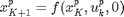
function x_p = compute_planned_traj(x_initial,u_p,kf) % noiselss motion x_p = zeros(state.dim,kf+1); x_p(:,1) = x_initial; for k = 1:kf x_p(:,k+1) = Unicycle_robot.f_discrete(x_p(:,k),u_p(:,k),zeros(Unicycle_robot.wDim,1)); end end
Sample a valid orbit (periodic trajectory)
function orbit = sample_a_valid_orbit() [x_temp,y_temp]=ginput(1); if isempty(x_temp) orbit = []; return else orbit_center = [x_temp;y_temp]; orbit = Unicycle_robot.generate_orbit(orbit_center); orbit = Unicycle_robot.draw_orbit(orbit); end end
Construct an orbit
function orbit = generate_orbit(orbit_center) % minimum orbit radius resutls from dividing the minimum linear % velocity to maximum angular velocity. However, here we assume % that the linear velocity is constant. orbit.radius = Unicycle_robot.turn_radius_min; orbit_length_meter = 2*pi*orbit.radius; orbit_length_time_continuous = orbit_length_meter/Unicycle_robot.linear_velocity_min_on_orbit; T_rational = orbit_length_time_continuous/Unicycle_robot.dt; T = ceil(T_rational); orbit.period = T; orbit.center = orbit_center; % defining controls on the orbit V_p = Unicycle_robot.linear_velocity_min_on_orbit * [ones(1,T-1) , T_rational-floor(T_rational)]; % we traverse the orbit with minimum linear velocity omega_p = Unicycle_robot.angular_velocity_max * [ones(1,T-1) , T_rational-floor(T_rational)]; % we traverse the orbit with maximum angular velocity u_p = [V_p;omega_p]; w_zero = zeros(Unicycle_robot.wDim,1); % no noise % defining state steps on the orbit x_p(:,1) = [orbit_center - [0;orbit.radius] ; 0*pi/180]; % initial x for k=1:T x_p(:,k+1) = MotionModel_class.f_discrete(x_p(:,k),u_p(:,k),w_zero); end orbit.x = x_p(:,1:T); % "x_p" is of length T+1, but "x_p(:,T+1)" is equal to "x_p(:,1)" orbit.u = u_p; % "u_p" is of length T. orbit.plot_handle = []; end
Draw an orbit
function orbit = draw_orbit(orbit,varargin) % This function draws the orbit. % default values orbit_color = 'b'; % Default value for "OrbitTextColor" property. % User-provided value for "OrbitTextColor" property. orbit_width = 2; % User-provided value for "orbit_width" property. % User-provided value for shifting the text a little bit to the left. % for some reason MATLAB shifts the starting point of the text a little bit to the right. So, here we return it back. robot_shape = 'triangle'; % The shape of robot (to draw trajectories and to show direction of edges and orbits) robot_size = 1; % Robot size on orbits (to draw trajectories and to show direction of edges and orbits) orbit_trajectory_flag = 0; % Make it one if you want to see the orbit trajectories. Zero, otherwise. text_size = 12; text_color = 'b'; text_shift = 0.8; orbit_text = []; % parsing the varargin if ~isempty(varargin) for i = 1 : 2 : length(varargin) switch lower(varargin{i}) case lower('RobotSize') robot_size = varargin{i+1}; case lower('OrbitWidth') orbit_width = varargin{i+1}; case lower('OrbitColor') orbit_color = varargin{i+1}; case lower('OrbitText') orbit_text = varargin{i+1}; end end end % start drawing if orbit_trajectory_flag == 1 orbit.plot_handle = []; for k=1:orbit.period Xstate = state(orbit.x(:,k)); Xstate = Xstate.draw('RobotShape',robot_shape,'robotsize',robot_size); orbit.plot_handle = [orbit.plot_handle,Xstate.head_handle,Xstate.text_handle,Xstate.tria_handle]; end tmp = plot(orbit.x(1,:) , orbit.x(2,:),orbit_color); orbit.plot_handle = [orbit.plot_handle,tmp]; else orbit.plot_handle = []; th_orbit_draw = [0:0.1:2*pi , 2*pi]; x_orbit_draw = orbit.center(1) + orbit.radius*cos(th_orbit_draw); y_orbit_draw = orbit.center(2) + orbit.radius*sin(th_orbit_draw); tmp_h = plot(x_orbit_draw,y_orbit_draw,'lineWidth',orbit_width); Xstate = state(orbit.x(:,1)); Xstate = Xstate.draw('RobotShape',robot_shape,'robotsize',robot_size); orbit.plot_handle = [orbit.plot_handle,tmp_h,Xstate.head_handle,Xstate.text_handle,Xstate.tria_handle]; end if ~isempty(orbit_text) text_pos = orbit.center; text_pos(1) = text_pos(1) - text_shift; % for some reason MATLAB shifts the starting point of the text a little bit to the right. So, here we return it back. tmp_handle = text( text_pos(1), text_pos(2), orbit_text, 'fontsize', text_size, 'color', text_color); orbit.plot_handle = [orbit.plot_handle,tmp_handle]; end end
Generate open-loop Orbit-to-Orbit trajectory
function nominal_traj = generate_open_loop_orbit2orbit_traj(start_orbit, end_orbit) % generates open-loop trajectories between two start and end orbits % check if the both orbits are turning in the same % direction or not. direction_start_orbit = sign(start_orbit.u(1,1))*sign(start_orbit.u(2,1)); direction_end_orbit = sign(end_orbit.u(1,1))*sign(end_orbit.u(2,1)); % finding the connecting edge between orbits. if direction_start_orbit == direction_end_orbit % both orbits turn in a same direction gamma = atan2( end_orbit.center(2) - start_orbit.center(2) , end_orbit.center(1) - start_orbit.center(1) ); temp_edge_start = start_orbit.radius * [ cos(gamma-pi/2) ; sin(gamma-pi/2) ] + start_orbit.center; temp_edge_end = end_orbit.radius* [ cos(gamma-pi/2) ; sin(gamma-pi/2) ] + end_orbit.center; else error('different directions have not been implemented in PNPRM yet.') end temp_traj.x(:,1) = temp_edge_start; temp_traj.x(:,2) = temp_edge_end; % we generate this trajectory (only composed of start and end points) to check the collision probabilities before generating the edges. collision = Unicycle_robot.is_constraints_violated(temp_traj); % checking intersection with obstacles if collision == 1 nominal_traj = []; return else % construction edge trajectory tmp_traj_start = [temp_edge_start ; gamma ]; V_p = start_orbit.u(1,1); step_length = V_p * Unicycle_robot.dt; edge_length = norm ( end_orbit.center - start_orbit.center ) ; edge_steps = floor(edge_length/step_length); omega_p = 0; u_p = [V_p;omega_p]; w_zero = zeros(MotionModel_class.wDim , 1); % no noise nominal_traj.x(:,1) = tmp_traj_start; for k =1:edge_steps nominal_traj.x(:,k+1) = MotionModel_class.f_discrete(nominal_traj.x(:,k), u_p, w_zero); end nominal_traj.u(:,1:edge_steps) = repmat(u_p,1,edge_steps); end end
check if the trajectory is collision-free or not
function YesNo = is_constraints_violated(open_loop_traj) % this function checks if the "open_loop_traj" violates any constraints or not. For example it checks collision with obstacles. % In this class the open loop trajectories are indeed straight % lines. So, we use following simplified procedure to check the % collisions. error('This function is obsolete. Instead, we have the "generate_VALID_open_loop_point2point_traj" function') YesNo = 0; Obst = obstacles_class.obst; edge_start = open_loop_traj.x(1:2 , 1); edge_end = open_loop_traj.x(1:2 , end); N_obst = size(Obst,2); for ib=1:N_obst X_obs=[Obst{ib}(:,1);Obst{ib}(1,1)]; Y_obs=[Obst{ib}(:,2);Obst{ib}(1,2)]; X_edge=[edge_start(1);edge_end(1)]; Y_edge=[edge_start(2);edge_end(2)]; [x_inters,~] = polyxpoly(X_obs,Y_obs,X_edge,Y_edge); if ~isempty(x_inters) YesNo=1; return end end end
Draw nominal trajectories
function traj_plot_handle = draw_nominal_traj(nominal_traj, traj_flag) traj_plot_handle = []; if traj_flag == 1 for k = 1 : size(nominal_traj.x , 2) tmp_Xstate = state (nominal_traj.x(:,k) ); tmp_Xstate.draw('RobotShape','triangle','robotsize',1);%,'TriaColor',color(cycles)); %traj_plot_handle(k:k+2) = %[tmp_Xstate.head_handle,tmp_Xstate.text_handle,tmp_Xstate.tria_handle]; end else tmp_handle = plot(nominal_traj.x(1,:) , nominal_traj.x(2,:)); traj_plot_handle = [traj_plot_handle , tmp_handle]; len = size( nominal_traj.x , 2); tmp_Xstate = state( nominal_traj.x(:,floor(len/2)) ); % to plot the direction of the line. % tmp_Xstate = tmp_Xstate.draw('RobotShape','triangle','robotsize',2); % traj_plot_handle = [traj_plot_handle , tmp_Xstate.plot_handle , tmp_Xstate.head_handle , tmp_Xstate.tria_handle , tmp_Xstate.text_handle ]; drawnow end end
Draw orbit neighborhood
function plot_handle = draw_orbit_neighborhood(orbit, scale) tmp_th = 0:0.1:2*pi; x = orbit.center(1); y = orbit.center(2); plot_handle = plot(scale*cos(tmp_th) + x , scale*sin(tmp_th) + y, '--'); end
end
end
Undefined variable "state" or class "state.dim".
Generating Control-dependent and independent noises
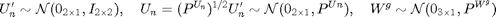
The reason we do not use "mvnrnd" to generate is the speed. The way we do here is much faster than using "mvnrnd".
function [Un,Wg] = generate_control_and_indep_process_noise(U) % generate Un indep_part_of_Un = randn(Unicycle_robot.ctDim,1); P_Un = control_noise_covariance(U); Un = indep_part_of_Un.*diag(P_Un.^(1/2)); % generate Wg Wg = mvnrnd(zeros(Unicycle_robot.stDim,1),Unicycle_robot.P_Wg)'; end
Generating Control-dependent Noise Covariance
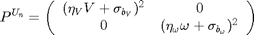,
where, 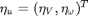 and 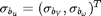.
function P_Un = control_noise_covariance(U) u_std=(Unicycle_robot.eta_u).*U+(Unicycle_robot.sigma_b_u); P_Un=diag(u_std.^2); end
Generating deterministic open loop controls (nominal controls)
I think this function should go out of this class maybe.
function [u_p,kf] = compute_planned_control_unicycle(X_initial,X_final) % inputs x_c=[X_initial(1),X_final(1)]; y_c=[X_initial(2),X_final(2)]; dt=user_data_class.par.motion_model_parameters.dt; omega_path=user_data_class.par.motion_model_parameters.omega_const_path; % constant rotational velocity during turnings V_path=user_data_class.par.motion_model_parameters.V_const_path; % constant translational velocity during straight movements %stDim=Unicycle_robot.stDim; ctDim=Unicycle_robot.ctDim; % preallocation th_p=zeros(1,length(x_c)); delta_th_p=zeros(1,length(x_c)); rotation_steps=zeros(length(x_c)-1,1); delta_disp=zeros(length(x_c)-1,1); translation_steps=zeros(length(x_c)-1,1); total_num_steps=0; % Dividing the motion to pure translations and rotations th_initial=X_initial(3); for i=1:length(x_c)-1 % rotations th_p(i)=atan2((y_c(i+1)-y_c(i)),(x_c(i+1)-x_c(i))); if i>1, delta_th_p(i)=th_p(i)-th_p(i-1); else delta_th_p(i)=th_p(i)-th_initial; end; rotation_steps(i)=abs(delta_th_p(i)/(omega_path*dt)); %translations delta_disp(i)=sqrt( (y_c(i+1)-y_c(i))^2+(x_c(i+1)-x_c(i))^2 ); translation_steps(i)=abs(delta_disp(i)/(V_path*dt)); total_num_steps=total_num_steps+ceil(rotation_steps(i))+ceil(translation_steps(i)); end kf=total_num_steps; % Computing Velocities along the path % omega_path=zeros(1,kf); % v_path=zeros(1,kf); u_p=nan(ctDim,kf+1); start_ind_w=1; % end_ind_w=start_ind_w+ceil(rotation_steps(1))-1; end_ind_w=start_ind_w+floor(rotation_steps(1)); for i=1:length(x_c)-1 %Rotation if end_ind_w~=0 u_const = [ 0 ; omega_path*sign(delta_th_p(i)) ]; u_p(:,start_ind_w:end_ind_w-1)=repmat(u_const,1,floor(rotation_steps(i))); u_const_end=u_const * (rotation_steps(i)-floor(rotation_steps(i))); u_p(:,end_ind_w)=u_const_end; end %Translations u_const = [ V_path ; 0 ]; u_p(:,end_ind_w+1:end_ind_w+ceil(translation_steps(i))-1)=repmat(u_const,1,floor(translation_steps(i))); u_const_end=u_const*(translation_steps(i)-floor(translation_steps(i))); u_p(:,end_ind_w+ceil(translation_steps(i)))=u_const_end; %Preparing for the next path segment if i~=length(x_c)-1 %% This "if" is just for avoiding the error massege that appears due to non-existence of rotation_steps(length(x_c)) start_ind_w=start_ind_w+ceil(rotation_steps(i))+ceil(translation_steps(i)); end_ind_w=start_ind_w+ceil(rotation_steps(i+1))-1; end end % u_p=[x_dot;theta_dot]; % u_p=[u_p,[nan;nan]]; end
Generating deterministic open loop controls with bounded curvature (nominal controls)
I think this function should go out of this class maybe.
function [u_p,kf] = compute_planned_control_unicycle_bounded_curvature(X_initial,X_final) % inputs x_c=[X_initial(1),X_final(1)]; y_c=[X_initial(2),X_final(2)]; dt=user_data_class.par.motion_model_parameters.dt; omega_path=user_data_class.par.motion_model_parameters.omega_const_path; % constant rotational velocity during turnings V_path=user_data_class.par.motion_model_parameters.V_const_path; % constant translational velocity during straight movements %stDim=Unicycle_robot.stDim; ctDim=Unicycle_robot.ctDim; % preallocation th_p=zeros(1,length(x_c)); delta_th_p=zeros(1,length(x_c)); rotation_steps=zeros(length(x_c)-1,1); delta_disp=zeros(length(x_c)-1,1); translation_steps=zeros(length(x_c)-1,1); total_num_steps=0; % Dividing the motion to pure translations and rotations th_initial=X_initial(3); for i=1:length(x_c)-1 % rotations th_p(i)=atan2((y_c(i+1)-y_c(i)),(x_c(i+1)-x_c(i))); if i>1, delta_th_p(i)=th_p(i)-th_p(i-1); else delta_th_p(i)=th_p(i)-th_initial; end; rotation_steps(i)=abs(delta_th_p(i)/(omega_path*dt)); %translations delta_disp(i)=sqrt( (y_c(i+1)-y_c(i))^2+(x_c(i+1)-x_c(i))^2 ); translation_steps(i)=abs(delta_disp(i)/(V_path*dt)); total_num_steps=total_num_steps+ceil(rotation_steps(i))+ceil(translation_steps(i)); end kf=total_num_steps; % Computing Velocities along the path % omega_path=zeros(1,kf); % v_path=zeros(1,kf); u_p=nan(ctDim,kf+1); start_ind_w=1; % end_ind_w=start_ind_w+ceil(rotation_steps(1))-1; end_ind_w=start_ind_w+floor(rotation_steps(1)); for i=1:length(x_c)-1 %Rotation if end_ind_w~=0 u_const = [ 0 ; omega_path*sign(delta_th_p(i)) ]; u_p(:,start_ind_w:end_ind_w-1)=repmat(u_const,1,floor(rotation_steps(i))); u_const_end=u_const * (rotation_steps(i)-floor(rotation_steps(i))); u_p(:,end_ind_w)=u_const_end; end %Translations u_const = [ V_path ; 0 ]; u_p(:,end_ind_w+1:end_ind_w+ceil(translation_steps(i))-1)=repmat(u_const,1,floor(translation_steps(i))); u_const_end=u_const*(translation_steps(i)-floor(translation_steps(i))); u_p(:,end_ind_w+ceil(translation_steps(i)))=u_const_end; %Preparing for the next path segment if i~=length(x_c)-1 %% This "if" is just for avoiding the error massege that appears due to non-existence of rotation_steps(length(x_c)) start_ind_w=start_ind_w+ceil(rotation_steps(i))+ceil(translation_steps(i)); end_ind_w=start_ind_w+ceil(rotation_steps(i+1))-1; end end % u_p=[x_dot;theta_dot]; % u_p=[u_p,[nan;nan]]; end